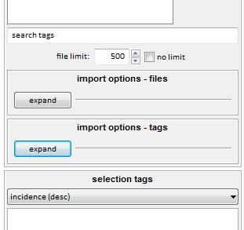
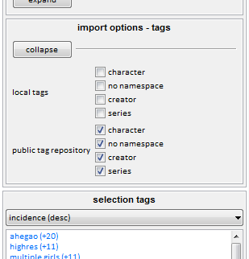

how do we find files?
So, you have stored some media in your database. Everything is hashed and cached. You can search by inbox and resolution and size and so on, but if you really want to find what we are looking for, you will have to use tags.
Your client starts with a 'local tags' service, which keeps all of its file->tag mappings in your client's database where only you can see them. It is a good place to practise. So, select a file and press F3:

The autocomplete dropdown in the manage tags dialog works very like the one in a normal search page—you type part of a tag, and matching results will appear below. You select the tag you want with the arrow keys and hit enter. Since your local tags service doesn't have any tags in it yet, you won't get any results here except the exact match of what you typed. If you want to remove a tag, enter the exact same thing again or double-click it in the box above.
Prefixing a tag with a category and a colon will create a namespaced tag. This helps inform the software and other users about what the tag is. Examples of namespaced tags are:
- character:batman
- series:street fighter
- person:jennifer lawrence
- title:vitruvian man
The client is set up to draw common namespaces in different colours, just like boorus do. You can change these colours in the options.
Once you are happy with your tags, hit 'apply' or just press enter on the text box if it is empty.

The tags are now saved to your database. Searching for any of them will return this file and anything else so tagged:

If you add more tags or system predicates to a search, you will limit the results to those files that match every single one:

You can also exclude a tag by prefixing it with a hyphen (e.g. '-heresy').
tag repositories
It can take a long time to tag even this small number of files well, so I created tag repositories so people can share the work.
Tag repos store many file->tag relationships. Anyone who has an access key to the repository can sync with it and hence download all these relationships. If any of their own files match up, they will get those tags. Access keys will also usually have permission to upload new tags and ask for existing ones to be deleted.
Anyone can run a tag repository, but it is a bit complicated for new users. I run a public tag repository that you are very welcome to access and contribute to. To connect with it, go services->manage services->remote->tag repositories and hit the 'add' button. You'll be asked if you have a registration key or an access key; you have an access key.

Here's the info so you can copy it:
- 4a285629721ca442541ef2c15ea17d1f7f7578b0c3f4f5f2a05f8f0ab297786f@hydrus.no-ip.org:45871
Over time, usually when it is idle, your client will download updates from the repository until it is fully synchronised. You can customise when this happens in file->options->maintenance and processing. As the repository synchronises, you should see some new tags appear, particularly on famous files that lots of people have.
Tags are rich, cpu-intensive metadata. My repository has millions of mappings, and your client will download and store them all. It will take a few hundred MB and several hours total processing time to fully synchronise. It will mostly happen in the background, without you noticing.
You can watch more detailed synchronisation progress in the services->review services window.

Your new service should now be listed on the left of the manage tags dialog. Adding tags to a repository works very similarly to the local tags service except hitting 'apply' will not immediately confirm your changes—it will put them in a queue to be uploaded. These 'pending' tags will be counted with a plus '+' or minus '-' sign:

Notice that a 'pending' menu has appeared on the main window. This lets you start the upload when you are ready and happy with everything that you have queued.
When you upload your pending tags, they will commit and look to you like any other tag. The tag repository will anonymously bundle them into the next update, which everyone else will download in a day or so. They will see your tags just like you saw theirs.
If you attempt to remove a tag that has been uploaded, you may be prompted to give a reason, creating a petition that an administrator will review.
Please do not spam tags to my public tag repo until you get a rough feel for the tag schema, or just lurk until you get the idea. I am not very strict about it (it is not difficult to correct mistakes), but I essentially only want factual tags—no subjective opinion.
You can connect to many different tag repositories, if you like. When you are in the manage tags dialog, pressing the up or down arrow keys on an empty input switches between your services.
FAQ: why can my friend not see what I just uploaded?
importing tags from galleries
In several places around the hydrus client, always in the context of importing files from another location, you will see this:

If you hit the 'expand' buttons, you will get some more options for the imports. The tag ones are like this:

The namespaces listed are those that hydrus knows how to parse from the gallery site or wherever you are downloading files from. Selecting one will tell hydrus to get those tags and set/pend them to the respective tag service.
You can quickly get thousands of tags in a few minutes this way!